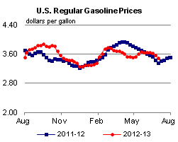
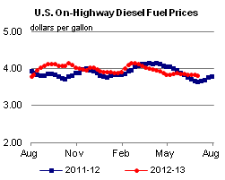
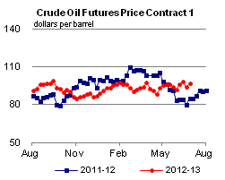
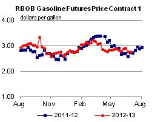
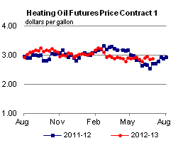
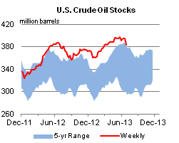
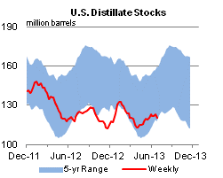
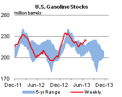
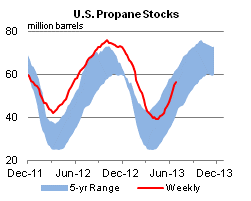

Released: July 3, 2013
Next Release: July 10, 2013
A Look at U.S. Gasoline Markets
"Location, location, location" is a well-known mantra in the real estate industry. The same can be said about gasoline prices as well. As the nation's drivers approach the Independence Day holiday – a key milestone of the summer driving season – this article takes the opportunity to review developments in U.S. regional gasoline developments during the first half of 2013.
According to EIA's latest weekly survey, U.S. retail gasoline prices averaged $3.50 per gallon on Monday, July 1, up 14 cents from a year ago. However, average gasoline prices for the first half of this year are 8 cents below average prices in first-half 2012.
{kind=link}
Wholesale conventional gasoline spot prices are down modestly across the country over the past week (Figure 1). In addition to lower crude oil prices, a major factor putting downward pressure on prices is the continued decline in gasoline consumption, which was almost 1 percent lower in January-April this year than in the comparable 2012 period (Figure 2). Despite lower demand, refinery runs remain strong as refiners seek to meet strong demand for distillate fuels in export markets. While strong runs may be driven by distillate markets, they also add to gasoline production, which given weak demand is causing a build in gasoline stocks. Gasoline inventories are well above the five-year range – both in absolute levels and on a days-of-supply basis (Figure 3) – putting additional downward price pressure on gasoline, especially along the East Coast (PADD 1), the largest demand region.
Although demand recently experienced a seasonal uptick at the start of the summer driving season, it remains low compared to recent years in absolute terms given its low starting point (below the bottom of the 2008-12 five-year range). As predicted in EIA's April Short-Term Energy Outlook Summer Fuels Outlook, the slow-growing economy, better fuel efficiency in the vehicle fleet, and potential changes in consumer behavior due to relatively high prices are curbing demand.
EAST COAST (PADD 1)
Gasoline demand has fallen more on the East Coast than in any other region, with product supplied through April (latest data available) down 237,000 barrels per day (bbl/d) – 8 percent – compared to the same period last year (Figure 4). While PADD 1 is the largest consuming region in the United States, accounting for 35 percent of U.S. demand, it accounted for almost the entire decline in demand this year. Excluding PADD 1, U.S. 2013 gasoline demand increased 175,000 bbl/d through April compared to the same period in 2012. However, PADD 1 declined 238,000 bbl/d, more than offsetting increases elsewhere. Although January-April demand in PADD 1 has fallen or held steady every year since the recession, declines since 2008 averaged 1 percent annually, rather than the larger drop-off seen so far in 2013.
{kind=link}
Despite lower demand, high refinery utilization rates on the East Coast and strong imports from the Gulf Coast and Europe have helped raise inventories. Trade press reports indicate that Gulf Coast deliveries to PADD 1 are at maximum levels. Additionally, increasing refiner crack spreads for distillate in Europe have helped drive up utilization rates both there and in PADD 1 for exports to Europe. This has led to corresponding strong levels of gasoline production in the region and gasoline imports into PADD 1 despite the closure of the trans-Atlantic arbitrage window. The need for European refiners to continue to produce distillates – and as a result, surplus gasoline – to meet European domestic demand, combined with limited markets for their surplus gasoline, has helped keep gasoline imports from Europe flowing into PADD 1.
The combination of relatively high supply and low demand has pushed PADD 1 inventory levels up 10 million barrels (18 percent) compared to June 2012 – well above the top of the five-year range – putting downward pressure on prices. New York Harbor conventional gasoline spot prices in the first half of 2013 averaged 13 cents (4 percent) lower than the same period in 2012.
MIDWEST AND ROCKIES (PADDs 2 and 4)
Planned and unplanned refinery maintenance as well as longer-term refinery upgrading projects over the past few months reduced gasoline production in the Midwest, pushing gasoline inventories lower and gasoline prices higher.
Chicago conventional spot prices increased $0.36 over four days in mid-April and continued upward before spiking another $0.57 between May 29 and June 3, sending regional retail prices to recent or all-time highs. Conventional gasoline spot price differentials between Chicago and New York Harbor approached $1 per gallon at their peak on June 3. The Chicago spot price has since come down, falling $1.10 during the rest of June as refineries returned to full production, with declines in retail prices following.
{kind=link}
Beginning in mid-April, refinery maintenance caused gasoline inventories in PADD 2 to fall sharply – by more than 6 million barrels, moving stocks from the top to the bottom of the five-year range – before recovering in May and June as major refineries restarted from maintenance, long-term upgrades were completed, and product from PADD 3 entered the market. With production returning to normal levels, prices in the Midwest have come down significantly, with PADD 2 retail prices dipping below the national average on June 24 for the first time in more than two months.
PADD 4 experienced lagged spillover price effects from PADD 2. Maintenance at both of Minnesota's two refineries, in addition to other, larger refineries in PADD 2, pushed prices higher in PADD 4. The average Rocky Mountain retail regular gasoline price rose 24 cents from the end of April through the week of May 27, before turning lower as market tightness abated.
{kind=link}
GULF COAST (PADD 3)
Average U.S. Gulf Coast gasoline spot prices were lower during the first half of 2013 than the same period a year ago, reflecting a similar reduction in Light Louisiana Sweet (LLS) prices over the same period. Without the disruptions affecting other regions, PADD 3 prices remained relatively stable – despite significant growth in regional gasoline demand.
Unlike the United States as a whole, gasoline demand in the Gulf Coast has experienced robust growth, rising 7 percent in 2012 over 2011. Available data (through April) shows a continuation of the trend, with 2013 consumption up almost 9 percent (118,000 bbl/d) over the same period a year ago. This is substantially above the 2-percent growth in PADDs 2 and 5, the other regions with demand growth, and the shrinking demand in the United States as a whole, which has declined every year since 2009.
WEST COAST (PADD 5)
Wholesale gasoline prices on the West Coast, represented by the Los Angeles (LA) conventional spot price, averaged $3.01 per gallon through June 26, down $0.12 (4 percent) from the same period in 2012.
Refinery maintenance caused several sharp wholesale gasoline price changes in PADD 5 in the first half of 2013. However, there were significant differences in the pass-through to retail prices during this period. Refinery maintenance in January was particularly heavy, with almost 300,000 bbl/d of fluid catalytic cracking (FCC) capacity offline. FCC units are particularly important for gasoline production, and FCC maintenance can significantly affect gasoline prices. Wholesale spot prices for LA conventional rose 70 cents per gallon from mid-January to mid-February and remained elevated until March. The size and length of the wholesale change caused a corresponding increase in prices at the pump.
Supply concerns surrounding mid-June refinery maintenance caused LA conventional gasoline prices to spike 40 cents in two days. However, initial market concerns were overblown, with adequate supplies in place to meet West Coast demand, and LA conventional spot prices quickly retreated. Despite the significant jump in wholesale prices, retail markets were relatively unaffected.
While the story of U.S. gasoline markets during the second half of 2013 cannot yet be written, experience allows us to be certain about two things – first, that there are inevitably surprises ahead of us; and second, that "location, location, location" will continue to drive important differences across regional markets.
Gasoline prices decrease for a 3rd consecutive week; diesel fuel for a 6th
The U.S. average retail price of regular gasoline decreased eight cents to $3.50 per gallon as of July 1, 2013, 14 cents higher than last year at this time. The U.S. average price has decreased 16 cents over the last three weeks, to the lowest level since January 28. Prices fell in all regions, led by a 15-cent decrease in the Midwest to $3.39 per gallon, down 47 cents over the last three weeks. The Gulf Coast price is now $3.31 per gallon, down seven cents from last week. The West Coast price is lower by six cents at $3.89 per gallon, and the East Coast price decreased four cents to $3.46 per gallon. Rounding out the regions, the Rocky Mountain price dropped three cents to $3.64 per gallon.
The national average diesel fuel price decreased two cents to $3.82 per gallon, 17 cents higher than last year at this time. Prices fell in all regions, led by a Midwest price decrease of three cents to $3.82 per gallon. The East Coast, Rocky Mountain, and West Coast prices are all lower by two cents, to $3.82, $3.82, and $3.94 per gallon, respectively. Rounding out the regions, the Gulf Coast price is $3.73 per gallon, a penny lower than last week.
Propane inventories gain
Total U.S. inventories of propane increased 1.5 million barrels from last week to end at 56.4 million barrels, but are 5.9 million barrels (9.4 percent) lower than the same period a year ago. The Midwest region led the gain with 1.1 million barrels, while Rocky Mountain/West Coast stocks increased by 0.2 million barrels. East Coast and Gulf Coast stocks each increased by 0.1 million barrels. Propylene non-fuel-use inventories represented 5.7 percent of total propane inventories.
Text from the previous editions of This Week In Petroleum is accessible through a link at the top right-hand corner of this page.
|  |  | ||||||
| Retail Data | Change From Last | Retail Data | Change From Last | ||||
| 07/01/13 | Week | Year | 07/01/13 | Week | Year | ||
| Gasoline | 3.496 | Diesel Fuel | 3.817 | ||||
|  |  | ||||||||||||||||||||||||||
|
 | ||||||||||||||||||||||||||
| *Note: Crude Oil Price in Dollars per Barrel. | |||||||||||||||||||||||||||
|  |  | ||||||
|  |  | ||||||
| Stocks Data | Change From Last | Stocks Data | Change From Last | ||||
| 06/28/13 | Week | Year | 06/28/13 | Week | Year | ||
| Crude Oil | 383.8 | Distillate | 120.8 | ||||
| Gasoline | 223.7 | Propane | 56.353 | ||||